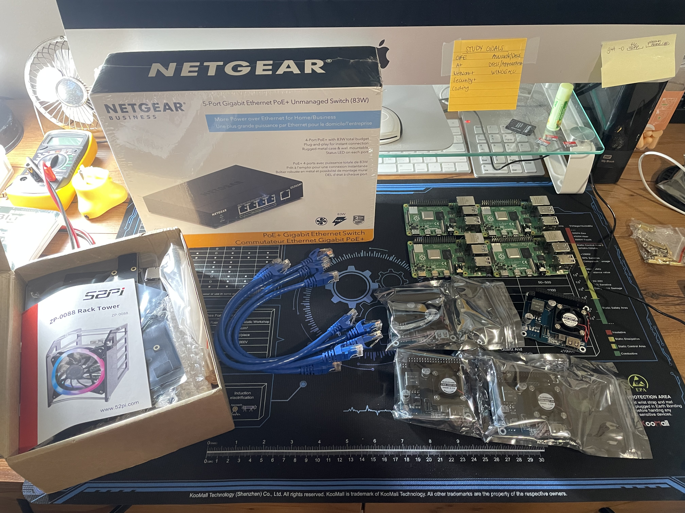
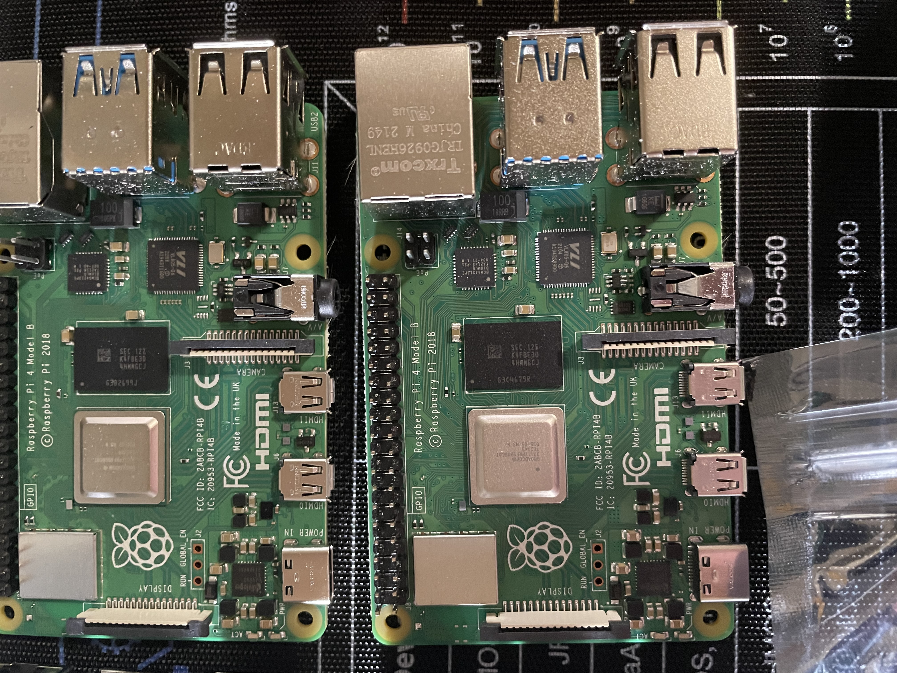
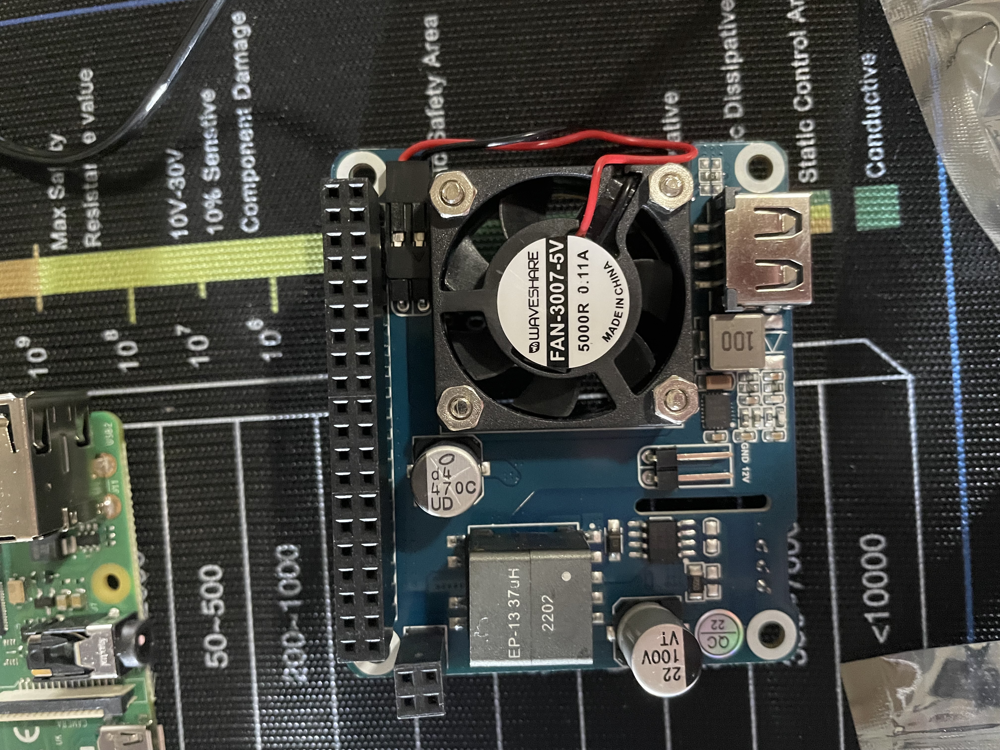

Project:
Building a 4-Node
Kubernetes Cluster
The purpose of this project is to build the necessary infrastructure for testing parallel computing. A 4-node architecture pools the processors of multiple machines to execute thousands of matrix operations or data calculations simultaneously. Where large data datasets are automatically partitioned and sent to different worker nodes. This architecture prevents a single system from running out of memory. Also, container orchestration tools like Kubernetes use optimized schedulers to automatically deploy parallel workers to the specific nodes with the most available CPU resources. Where if one node fails during a long-running simulation, Kubernetes automatically restarts the failed worker container on a remaining active node to preserve progress. Data scientists can use framework tools like Apache Spark or Ray on top of the cluster to coordinate complex parallel data jobs.
2x --> Raspberry Pi Rack Case with 120mm RGB LED 5V Cooling Fan
4x --> Power over Ethernet (PoE) hat for Raspberry Pi 4B
4x --> 32GB microSD cards
1x --> 5-Port Ethernet PoE Switch (4 PoE Ports, 1 Uplink)
4x --> 1ft CAT 6 Ethernet cable



--> Lightweight Headless OS
--> Command Line Only
--> Optimized Resource Allocation
--> Optimized to Run Docker or Kubernetes Clusters
--> an open-source platform that uses operating system-level virtualization to bundle an application and all its required dependencies into a single, lightweight package called a container
--> an open-source container orchestration platform designed to automatically deploy, scale, and manage containerized applications across a cluster of servers
>> Pod - The smallest deployable unit in Kubernetes, which hosts one or more tightly coupled containers.
>> Node - A physical or virtual worker machine inside the cluster that executes the assigned Pods.
>> Cluster - A set of worker nodes grouped together and managed by a centralized Control Plane.
>> Control Plane - The brain of the cluster that schedules workloads and maintains the desired state of the system.
--> an open-source, distributed data-processing engine designed to perform lightning-fast analytics on massive data sets across computer clusters
>> Resilient Distributed Dataset - The fundamental, fault-tolerant collection of data elements that can be operated on in parallel across a cluster.
>> DataFrames & Datasets - Higher-level, optimized abstractions that organize data into named columns, similar to a relational database table.
>> Driver Program - The central controller process that runs your main application code and creates the SparkSession.
>> Cluster Manager - An external service (like Kubernetes, Apache Mesos, or YARN) that allocates resources across the cluster.
>> Worker Nodes - The physical or virtual machines that execute the individual data-processing tasks assigned by the driver.
- write SD cards with Ubuntu Server 26.04 LTS image file
Apache Spark Install